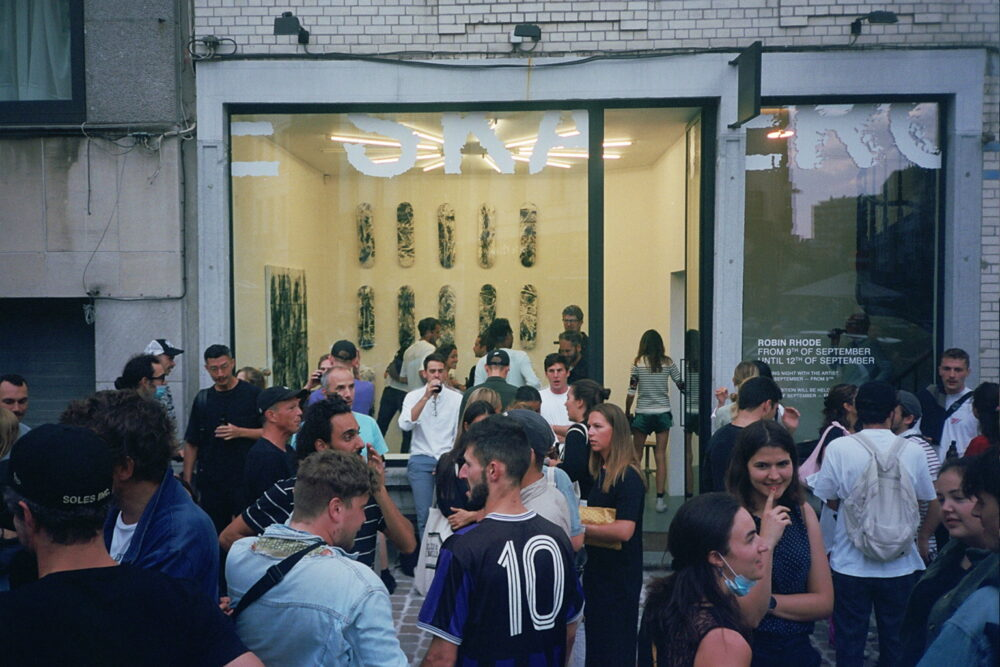

Sinds 2014 werkt THE SKATEROOM nauw samen met 's werelds meest invloedrijke artiesten om internationale skate- en onderwijs non-profitorganisaties en -projecten te ondersteunen. `
Als trotse B Corp omarmen we een sociaal ondernemerschapsmodel, terwijl we actief werken aan het verbeteren van duurzaamheid en transparantie in ons werk.
We verbinden ons aan de organisaties die we financieren: minstens 10% van alle inkomsten bij THE SKATEROOM gaat rechtstreeks naar het creëren van sociale verandering.
We helpen jongeren over de hele wereld te empoweren, nieuwe skateparken te bouwen en onderwijsfaciliteiten en hulpmiddelenprogramma's te ontwikkelen.
Door limited editions van THE SKATEROOM te kopen, hebben onze verzamelaars en gemeenschap een directe rol in het creëren van blijvende sociale verandering.
Samen werken we aan een betere toekomst voor het consumentisme.
We value art.
We value skate.
We value social change.
